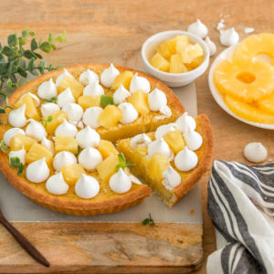

Tarte à l’ananas (meringuée)

Hello les gourmands, aujourd’hui on se retrouve avec une tarte à l’ananas, revisitée en tarte à l’ananas meringuée.
Autant je ne suis pas fan du tout des tartes meringuées, autant celles qui ont peu de meringues savent me faire de l’œil (comme avec la tarte au citron meringuée de Pierre Hermé juste ici pas trop sucrée et avec juste ce qu’il faut en meringues). Pour cette nouvelle recette, la marque St-Mamet m’a mis au défi de proposer des recettes avec leurs conserves de fruits et notamment ici avec leurs conserves d’ananas et j’ai accepté de me prêter au jeu ! J’ai accepté car mettre en avant un producteur français, engagé et qui produit des conserves de qualité comparables à des fruits frais, moi je dis oui 😊 (en plus ils sont du Sud de la France alors 😉)
En effet cette marque est basée à Nîmes et elle regroupe un bon nombre d’arboriculteurs passionnés qui misent sur la gourmandise et la transparence afin d’offrir le meilleur dans nos assiettes. Les ananas sont récoltés aux Philippines, cueillis à la main et immédiatement découpés pour en conserver toutes les qualités nutritionnelles.
Je profite de cet article pour faire un point sur les conserves car après avoir fait mes propres recherches, (car oui j’avais des idées reçues sur les conserves !) j’ai appris que lors d’une mise en conserve, le temps écoulé entre la récolte et le traitement est réduit au minimum. Il est de l’ordre de quelques heures ce qui permet de limiter considérablement les pertes vitaminiques. La conservation peut ensuite se faire durant plusieurs mois et même plusieurs années sans le moindre risque et surtout en gardant la valeur nutritionnelle du produit (et c’est surtout ça qui nous intéresse). J’étais au courant de ce procédé lors de la mise en conserve mais ce qui me faisait peur c’était surtout les additifs que l’on peut trouver dans les boites de conserves donc quand j’en achète, je regarde surtout les étiquettes et je n’hésite plus à en acheter de temps en temps (l’appli yuka est très utile pour ça!).
Pour en revenir à la recette, n’imaginez pas retrouver la même texture que dans une tarte citron meringuée. Personnellement j’adore la texture mi ferme-mi fondante quand je laisse cette tarte à l’ananas au frais, mon chéri, lui la préfère à température ambiante ! Bref c’est à vous de voir si vous aussi vous tentez cette recette 😊
Je vous laisse découvrir tout ça plus bas ! A très vite ♥
Ingrédients
- Pâte brisée (ou sablée sucrée) - 1
- Oeufs - 4 jaunes (gardez un blanc pour faire les meringues)
- Ananas - 300g
- Jus d'ananas (de la boite) - 100ml
- Maïzena - 100g
- Sucre - 60g
- Beurre - 30g
- Blanc d'oeuf - 1
- Sucre - le double du poids du blanc en sucre
- Morceaux d'ananas - quelques uns pour la déco
Instructions
- Préchauffez le four à 180°C.
- Étalez la pâte dans votre moule à tarte
- Piquez le fond du moule à l’aide d’une fourchette
- Placez au frais pendant la préparation de l’appareil à l’ananas
- Battre le sucre et le beurre jusqu’à obtenir un mélange crémeux
- Ajoutez les jaunes un à un tout en mélangeant à chaque ajout
- Mixez les 300g d’ananas et ajoutez-les au mélange ainsi que le jus d’ananas
- Ajoutez la Maïzena sans cesser de mélanger
- Versez la préparation dans votre moule et enfournez environ 20/25mn (surveillez la cuisson).
- Laissez refroidir la tarte le temps de la préparation des meringues.(vous pouvez acheter des mini meringues déjà prêtes)
- Préchauffez le four à 100°C
- Fouettez les blancs à l’aide d’un batteur ou de votre robot.
- Quand les blancs commencent à devenir mousseux, verser le sucre petit à petit.
- Continuez de fouetter jusqu'à ce que les blancs soient bien fermes et forme un bec d'oiseau
- A l’aide d’une poche à douille formez des petites meringues sur une plaque à pâtisserie
- Cuire à 100°C pendant 1h
- Disposez les meringues sur la tarte et ajoutez des morceaux d’ananas entre les meringues,
- Servir aussitôt
Les tips de la communauté
Tarte très attrayante visuellement qui séduit les lecteurs et les pousse à refaire le plat. Quelques questions pratiques sur la composition et la préparation, auxquelles l'auteure répond.
Astuces
- La pâte ne demande pas de cuisson préalable pour cette recette
- Préparer la pâte et la crème la veille, puis finitions le jour J pour éviter que la crème ne fige
Ajustements signalés
- Il y a une crème entre la pâte et les morceaux de meringue (point d'incompréhension clarifié)